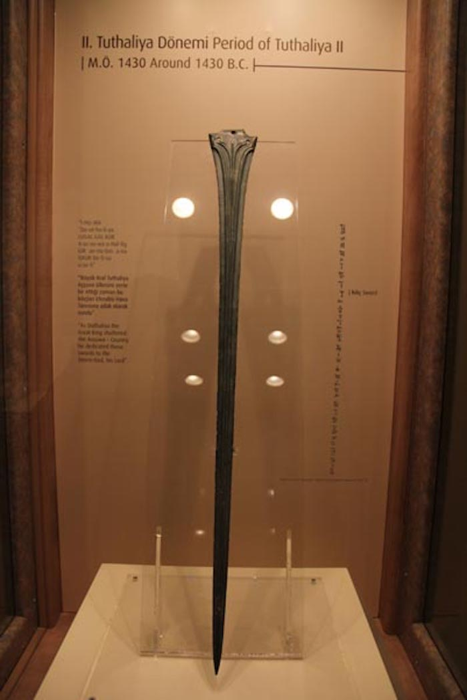

1968 yılında açılan Çorum Müzesi yeni binasına 2000 yılında taşınmış, 2003’de ziyarete açılmıştır. “Korunması Gerekli Taşınmaz Kültür Varlığı” olarak tescillenmiş olan müze binasında, Arkeolojik ve Etnografik teşhir salonları mevcut olup,
bu salonlar birbirinden bağımsız olarak düzenlenmiştir. Arkeoloji salonunda, Alacahöyük ve Kuşsaray kazılarında bulunmuş olan Kalkolitik Çağ eserleri ile başlayan kronolojik bir teşhir yapılmıştır. Bunu, Eski Tunç Çağı Resuloğlu Mezarlık
kazısı buluntuları ile Alacahöyük kazı buluntularının sergilendiği vitrinler takip etmektedir.

Müzede, Hitit dönemine ait üzeri çivi yazılı (M.Ö.1430) ünik bronz kılıç, Unesco tarafından “Dünya Belleği Listesine” alınan Hitit dönemi çivi yazılı tabletler, Boğazköy-Hattuşa ve Ortaköy-Şapinuva kazılarında arşiv halinde bulunan kil mühür baskılı bullalar
ile çivi yazılı tabletler, dönemindeki kullanım durumlarını gösteren canlandırmalar eşliğinde sergilenmektedir.
Kadeş Antlaşması, MÖ 13. yüzyılın başında, Kadeş Savaşı'nı sonlandıran, Mısır Firavunu II. Ramses ile Hitit Kralı III. Hattuşili arasında, bazı kaynaklara göre MÖ 1285[1], bazı kaynaklara göre MÖ 1280,[2] bazı kaynaklara göre ise MÖ 1286[3]
yılında imzalanan ve Suriye topraklarının paylaşılması ile neticelenen[1][4] barış antlaşmasıdır.[5] Yakın Doğu’da imzalanmış ilk antlaşma olma niteliğini taşır. Şu güne kadar kaydedilmiş-bulunmuş en eski uluslararası antlaşma[6] olmasına
karşın daha eski antlaşmaların varlığı kanıtlanmıştır. Orijinal olarak Akad dilinde yazılmış Mısır dili ve Hititçe'ye de kopyalanmış[6] eşit koşullar altında[5] imzalanmış olan antlaşmanın kil tabletten kopyası Hitit İmparatorluğu'nun
başkenti Hattuşa (Boğazköy) antik kentinde yapılan kazılar sonucu 1906 yılında bulunmuştur.[5]